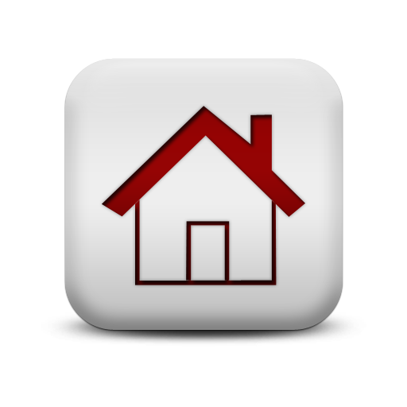

דוח סיכום
היית {{directionCounter.Right}} שניות בימין
היית {{directionCounter.Left}} שניות בשמאל
היית {{directionCounter.Back}} שניות מאחור
התחל מעקב
מקומך הנוכחי - {{currentPosition}}
!איזה יופי
!אתה כבר מלא זמן תקוע באותו המקום
!תזיז ת'תחת כבר מהמקום הזה
סיים מעקב